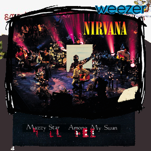
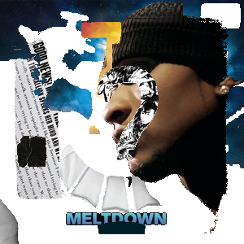
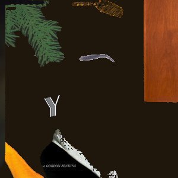
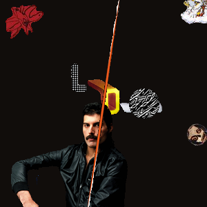
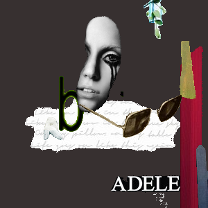
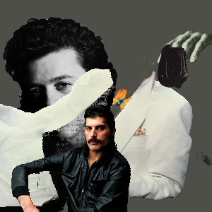

Building albumCollage

A couple of weeks ago, I attended the SAM 2 Hackathon at AGI House SF. SAM 2 is Meta's latest image/video segmentation mode. My partner at the event, Chris Voon, and I had no idea what we were really doing. Meeting 30+ tech bros within the span of an hour was overstimulating. We sat, thinking about different ideas for our project. Eventually, we settled on a general direction: we wanted to create something that delt with generating album covers. Initally, we wanted to train, or at least fine tune a model to generate album covers from scratch. So, we pulled from an API that listed album's, their covers, their artists, and their genres. Once we had this dataset, we began to work on implementing them into our SAM 2 API, graciously provided by replicate.com. At this point we had around 2 hours left in the hackathon, so we decided to pivot. Rather than generating from scratch, we decided to grab random bits and pieces of album covers of a given genre, and paste them on top of eachother. This was a fun, artsy project that we presented, and although we didn't win, we learned the importance of deciding what NOT to build. Here is the github repo for the project. Below are the results for each genre.
90s
hip-hop
jazz
rock
pop
80s
